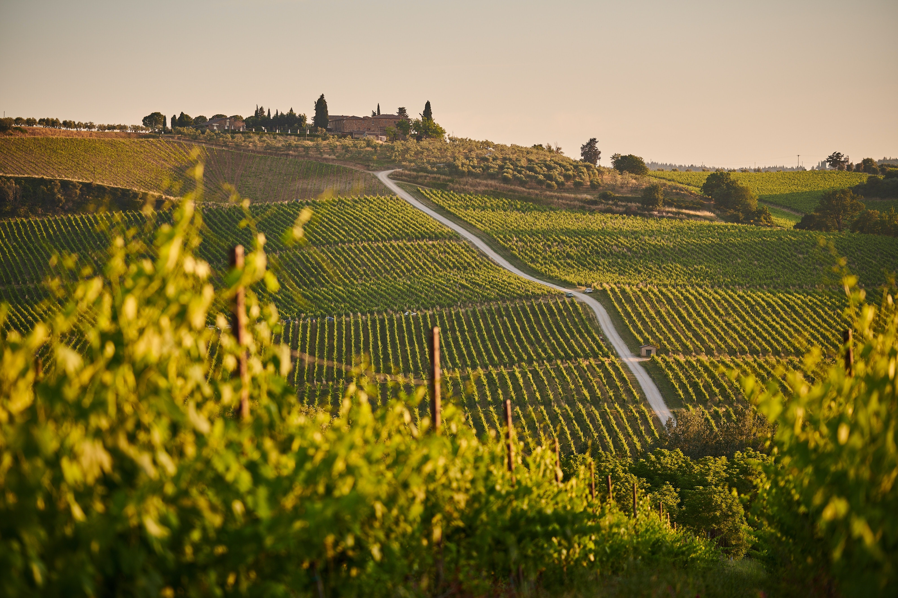

San Martino Alfieri

Das Schloß der Familie Alfieri überragt und bestimmt den Ort San Martino und ist von den drei Schwestern di San Germano in den letzten 12 Jahren wieder zu einem Weingut erstem Ranges ausgebaut worden. Bereits seit 1696 wird rund um das Schloß Wein angebaut. Generation um Generation pflegte diese Tradition und baute das Schloß, die "Citroniera", immer weiter aus. Errichtet worden ist es um 1630 von Antonio Bertola, einem bekannten Feldherrn jener Zeit, und ist dann unter Mithilfe des Architekten Benedetto Alfieri im Jahre 1760 erneuert und verschönert worden. 1982 erbte Marchesi Casimiro San Martino di San Germano den gesamten Besitz und erhält seit dem die Weintradition mit der Unterstützung seiner drei Töchter am Leben. Jeder, der einmal nach San Martino kommt, bewundert das barocke Schloß umgeben von seinen wunderschönen Weinbergen. Der Eigenbesitz an Weinbergen ist so groß, daß nur die besten Trauben für die eigene Kellerei Verwendung finden, der Rest wird an andere Weinbauern verkauft. So entstehen qualitativ hochwertige Barbera-Rotweine. Der "Rosso" besteht zu je der Hälfte aus Barbera und Pinot Nero. Da die verschiedenen Trauben Ihre Reife zu unterschiedlichen Zeiten erreichen, werden Sie bis zur Abfüllung getrennt aufbereitet. Nach der Abfüllung wird der Wein dann noch einige Monate in der Flasche gelagert, so daß er auch einige Jahre gelagert werden kann, aber auch schon in der Jugend seine volle Pracht entfaltet. Der "La Tota", was im Dialekt in etwa "junge Frau" bedeutet, und der "Alfiera" sind weitere Weine der Schwestern di San Germano. Man sollte über diese Weine eigentlich nicht viel sagen. Probieren Sie sie einmal, und Sie werden genauso überzeugt sein, wie wir es sind.
Bezeichnung |
Farbe |
Qualität |
Preis |
|---|---|---|---|
Roero Arneis, Vigneto San Dalmazzo |
Weißwein |
DOC 2004 - 12% |
14,90 € |
Barbaresco, Vigneto Cavana |
Rotwein |
DOCG 2001 - 13,5% |
19,90 € |
Gavi di Gavi, Rusca |
Weißwein |
DOC 2004 - 11,5% |
14,90 € |
Barbera d'Alba, Ciabot Camerano |
Rotwein |
DOC 2002 - 12,5% |
17,50 € |
Pinot Grigio |
Weißwein |
DOC 2004 - 12% |
10,90 € |
Pinot Grigio, barrique |
Weißwein |
DOC 2003 - 12% |
13,95 € |
Cantina Vietti - Castiglione Falletto

Unter der Regie des Önologen Luca Currado, dem Sohn von Luciana Vietti und Alfredo Currado, und Mario Cordero, dem Schwiegersohn der beiden Gutsbesitzer, der sich um die Öffentlichkeitsarbeit kümmert, hat sich die Cantina Vietti in den letzten Jahren zu einem stattlichen Weingut gemausert, das im In- und Ausland einen sehr guten Ruf genießt, besonders was die Qualität und Individualität des Barolo betrifft. Seit vier Generationen stellt die Familie Vietti in dem kleinen mittelalterlichen Dorf Castiglione Falletto inmitten der besten Anbauzone des Barolo-Gebietes Wein her. Die ganze Familie arbeitet für das Weingut und ist sich in dem Ziel einig, gemeinsam Weine von stetig steigender Qualität zu produzieren. Alle fühlen sich der Tradition verpflichtet, jeden Wein nur in kleinen Mengen und jede Lage getrennt zu vinifizieren. Die Cantina Vietti besitzt neun Hektar Weinberge, auf denen verschiedene Spielarten des Nebbiolo für die Herstellung von Barolo und Barbaresco, und daneben noch Dolcetto, Arneis und Moscato wachsen. Barolo und Barbaresco sind Weine, die je nach Jahrgang zwischen 8-15 Jahre lagerfähig sind. Der Dolcetto und auch die Weißweine sollten allerdings jung getrunken werden, da sie dann ihre ganze Frische zeigen können.
Bezeichnung |
Farbe |
Qualität |
Preis |
|---|---|---|---|
Barolo, Brunate |
Rotwein |
DOCG 2001 - 13,5% |
34,30 € |
Dolcetto d`Alba, Boschi di Berr |
Rotwein |
DOC 2004 - 12,5% |
20,60 € |
Scarzello, Girogio & Fighi, Barolo |
Rotwein |
DOCG 2005 - 14% |
47,95 € |